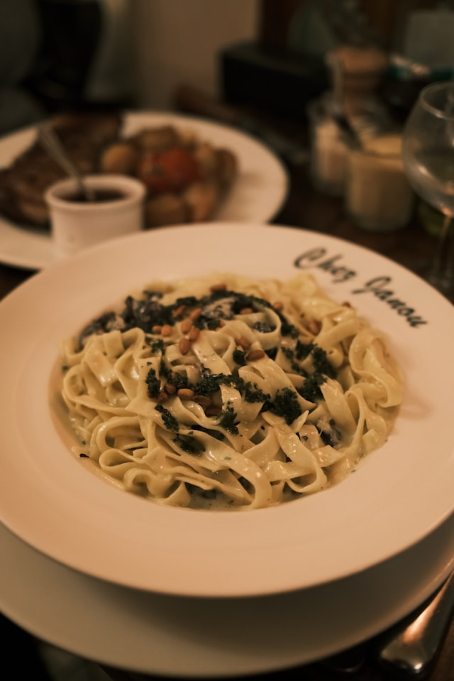

Alfredo Pasta

Description
Alfredo pasta is a rich and creamy Italian-inspired dish made with tender pasta coated in a smooth sauce of butter, heavy cream, garlic, and Parmesan cheese.
It's a comforting meal that comes together quickly and can be enjoyed on its own or paired with grilled chicken, shrimp, or vegetables.
Ingredients
- 8 oz (225 g) fettuccine or your preferred pasta
- 2 tablespoons butter
- 2 cloves garlic, minced
- 1 cup heavy cream
- 1 cup freshly grated Parmesan cheese
- ½ teaspoon salt (or to taste)
- ½ teaspoon black pepper
- ¼ teaspoon Italian seasoning (optional)
- 2 tablespoons chopped fresh parsley (optional, for garnish)
Steps to Follow
- Bring a large pot of salted water to a boil and cook the pasta according to the package instructions until al dente. Drain and set aside.
- In a large skillet, melt the butter over medium heat.
- Add the minced garlic and sauté for about 30-60 seconds until fragrant.
- Pour in the heavy cream and stir gently. Let it simmer for 2-3 minutes without boiling.
- Gradually add the grated Parmesan cheese, stirring continuously until the cheese melts and the sauce becomes smooth and creamy.
- Season the sauce with salt, black pepper, and Italian seasoning if using.
- Add the cooked pasta to the skillet and toss until every strand is evenly coated with the Alfredo sauce.
- Cook for another 1-2 minutes, allowing the pasta to absorb some of the sauce.
- Garnish with chopped parsley and extra Parmesan cheese if desired.
- Serve immediately while hot.
Go Back to Home Page